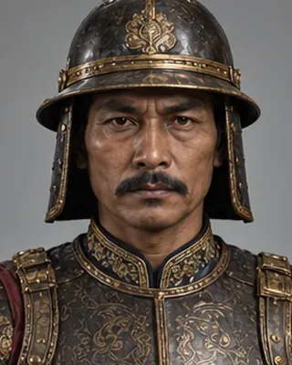
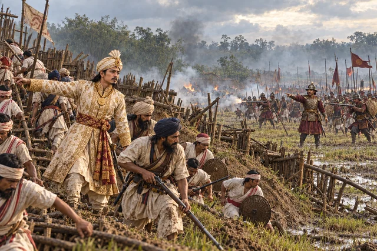

1821–1822 · Burmese general

Sent to Assam in 1821; installed Jogeswar Singha, defeated Chandrakanta in June 1822 and was declared Raja of Assam, ending Ahom rule.
Record confidence: medium.
Open interactive profile

March–April 1822
June–July 1822